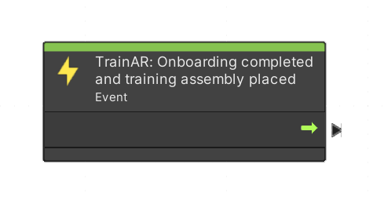
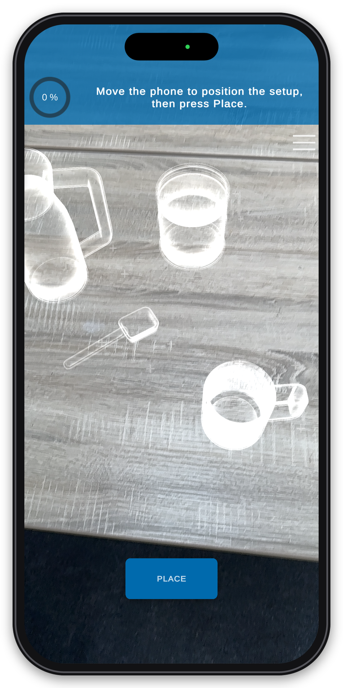
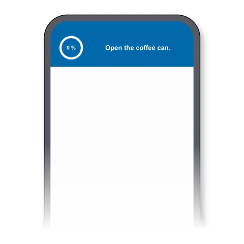
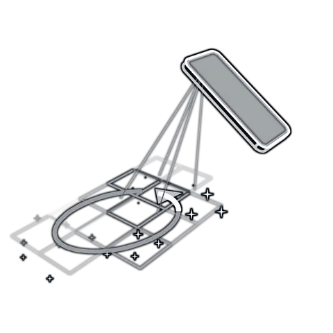
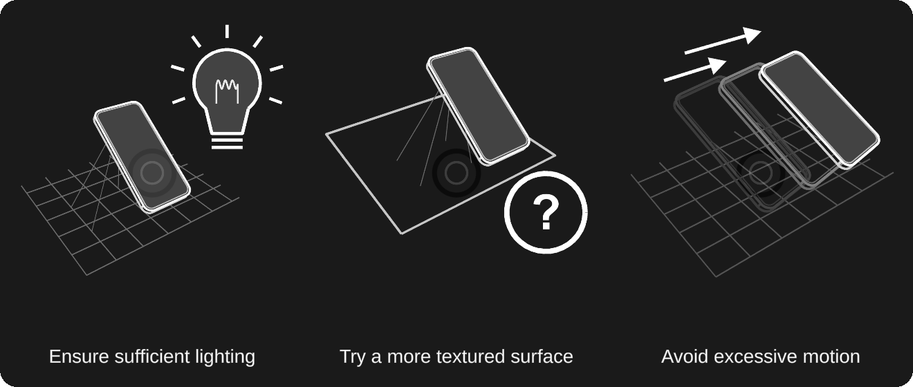

Start Training Node
The (green) Visual Scripting node called TrainAR: Onboarding completed and training assembly placed is an event node that is automatically executed when the user of the training went through the onboarding (the start pages explaining the interaction concept, read aloud), scanned a surface and placed the training assembly with the Place button. It acts as a starting point for a TrainAR training created by the author.
Important
There should be only one TrainAR: Onboarding completed and training assembly placed node present in a TrainAR Stateflow.
Note
While all other TrainAR nodes can be found under Right Click → TrainAR, the starting node is located under Right Click → Events.
| TrainAR Node | Result |
|---|---|
 |
 |
What happens before this node
Before the stateflow starts, TrainAR takes the trainee through the same steps in every training. Authors do not have to build any of this: it is part of the framework and uses the name, description and expert of the training (see Managing Trainings).
1. Home screen and start page
The trainee chooses the training on the home screen. The first page presents it: the expert introduces the training with its description, and below it is the preview of the training's setup, which TrainAR renders automatically before every build.
2. Onboarding
Five short pages explain the interaction concept, each with an animation, and every page is read aloud. Trainees can skip the onboarding on its second page.
| Page | What it explains |
|---|---|
 |
Instructions at the top: the blue bar at the top tells the trainee the next action and shows the progress. A sound tells whether an action was correct. |
| Interact: point the cursor at an object and move the phone close until it is outlined in blue, then press Interact. | |
| Grab: the same, then press Grab; the object moves with the phone until Release is pressed. | |
| Combine: move a held object into another one; if they can be combined, it turns transparent and Combine appears. | |
| Insights and feedback: the expert shares insights at the top, and for some incorrect actions an overlay explains what went wrong until Understood is tapped. |
3. Scanning and placing

The trainee moves the phone over a table until it is detected, then places the training's setup with the Place button. Now this node is executed and the stateflow of the training starts.
4. During the training: tracking warnings
If the phone loses track of its surroundings during the training, TrainAR dims the screen and shows what the trainee can do about it. This happens automatically, and the training continues as soon as tracking works again.
